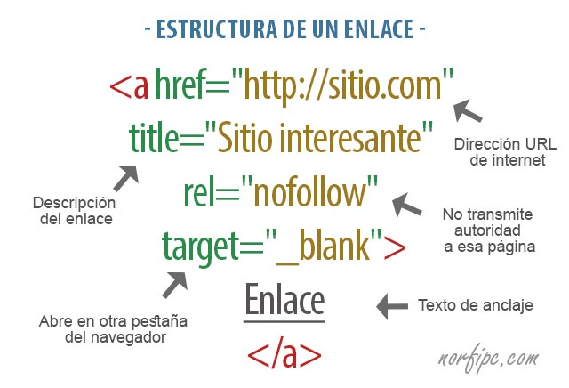

"Proposito del sitio"
Desarollar un objeto virtual para dimenizar las estrategias de aprendizaje, en este caso trabajaremos e investigaremos las definiciones y usos del Flex Box, Listas y Enlaces.
Flex Box

Esta herramienta es ideal para usar en sistemas de diseño responsivo y reemplaza los float o position cuando se desee centrar y ordenar elementos. El Flex Box nos permite alinear, llenar o distribuir el espacio entre los elementos dentro de un contenedor, usando anchos y alturas flexibles. Esto, lo convierte en una gran herramienta para usar en sistemas de diseño responsivo. Además, permite olvidar los float o position para cuando se desee centrar y ordenar los elementos de un diseño web. Una de las grandes ventajas que tiene el Flexbox, es su soporte. Casi todos los navegadores han implementado la mayoría de las funcionalidades de la herramienta. Sin embargo, falta que se integre el 100% de compatibilidad, porque hasta el momento soporta el 97,72%. De hecho, el 96.92% de los usuarios en todo el mundo usan un navegador que admite Flexbox. El único problema que se presenta es el soporte del navegador Internet Explorer (IE) donde la versión IE10 y IE11 solo ha implementado Flexbox parcialmente.
VENTAJAS DEL FLEXBOX
Display-flex: Establece el contenedor como un contenedor flexible. También, permite un contexto flexible para todos sus hijos directos.
Justify-content: Controla la alineación horizontal de los elementos dentro del contenedor flexible. (solo si, la dirección flexible de los elementos es el valor por defecto, es decir, row. )
Align-items: Controla la alineación vertical de los elementos dentro del contenedor flexible. (solo si, la dirección flexible de los elementos es el valor por defecto, es decir, row. )
Flex-direction: Especifica la dirección de los elementos flexibles.
Martínez, C. (s. f.). Ventajas para comenzar a utilizar flexbox. IdaBlock. Recuperado 21 de diciembre de 2017, de https://blog.ida.cl/desarrollo/ventajas-utilizar-flexbox/
Listas

son aquellas que nos muestran los elementos de la lista en orden. Para representar el orden tendremos los elementos numerados. Es decir, cada uno de los elementos irá precedido de un número o letra que establezca su orden. Las listas en HTML ordenadas se representan mediante el elemento OL.
Las listas en HTML nos permite crear conjuntos de elementos en forma de lista dentro de una página, todos los cuales irán precedidos, generalmente, por un guión o número.
Los tipos de listas en HTML son los siguientes:
- LISTAS ORDENADAS
Las listas en HTML ordenadas son aquellas que nos muestran los elementos de la lista en orden. Para representar el orden tendremos los elementos numerados. Es decir, cada uno de los elementos irá precedido de un número o letra que establezca su orden.
Las listas en HTML ordenadas se representan mediante el elemento OL.
-LISTAS DESORDENAS
Las listas desordenadas en HTML nos sirven para mostrar los elementos sin ningún tipo de orden, simplemente precedidos por una viñeta que puede ser un punto, un cuadrado,…
Para definir una lista desordenada en HTML utilizamos el elemento ul.
-LISTAS DE DEFINICIONES
Las listas en HTML de definiciones en HTML nos sirven para montar listas en las que tenemos la estructura valor y definición. Suelen ser listas para definir términos, como si fuese un diccionario, si bien pueden ser cualquier par valor-definición.
Las listas en HTML de definiciones en HTML se construyen mediante el elemento dl.
Listas HTML. (2021, 27 agosto). Manual Web. http://www.manualweb.net/html/listas-html/
Enlaces

Una de las ventajas de HTML es que permite enlazar varios textos de manera dinámica. Este enlace se denomina Link. Un link es una referencia (una manera de llegar) desde la página actual a otra página que puede estar en el mismo directorio, en otro directorio o aún en otro computador.
FORMA GENERAL DE UN LINK
Para insertar un link en un texto HTML se utiliza el comando (de anchor).
Este comando tiene modificadores, es decir, no basta con colocar el comando, es necesario especificarle ciertos parámetros. Uno de estos parámetros es HREF con el cual le indicamos hacia dónde debe seguir el link. Con terminamos el comando, y lo que queda encerrado entre y quedará subrayado indicando que es un link.
Por ejemplo, un link simple a otra página HTML es
Este es un link
LINKS LOCALES
Como en el ejemplo anterior, un link puede hacer referencia hacia un archivo en el mismo directorio. Sin embargo, si el archivo al cual queremos referenciar esta en otro directorio, podemos especificarlo en el modificador HREF utilizando .. como el directorio padre, y / como separador de directorios.
Por ejemplo, si el archivo está en el directorio padre:
Este archivo esta en el directorio padre
URL DE UN DOCUMENTO HTML
Si queremos especificar una página en el comutador xxx.yyy.zzz, que está en el directorio /AA/BB/CC/DD/, y se llama pagina.html, el URL será
http://xxx.yyy.zzz/AA/BB/CC/DD/pagina.html
Y por ende, un link a este documento será
Esta es una pagina en otro computador
Links en HTML. (s. f.). Enlaces. Recuperado 30 de septiembre de 2021, de https://users.dcc.uchile.cl/%7Eahevia/html/links.html